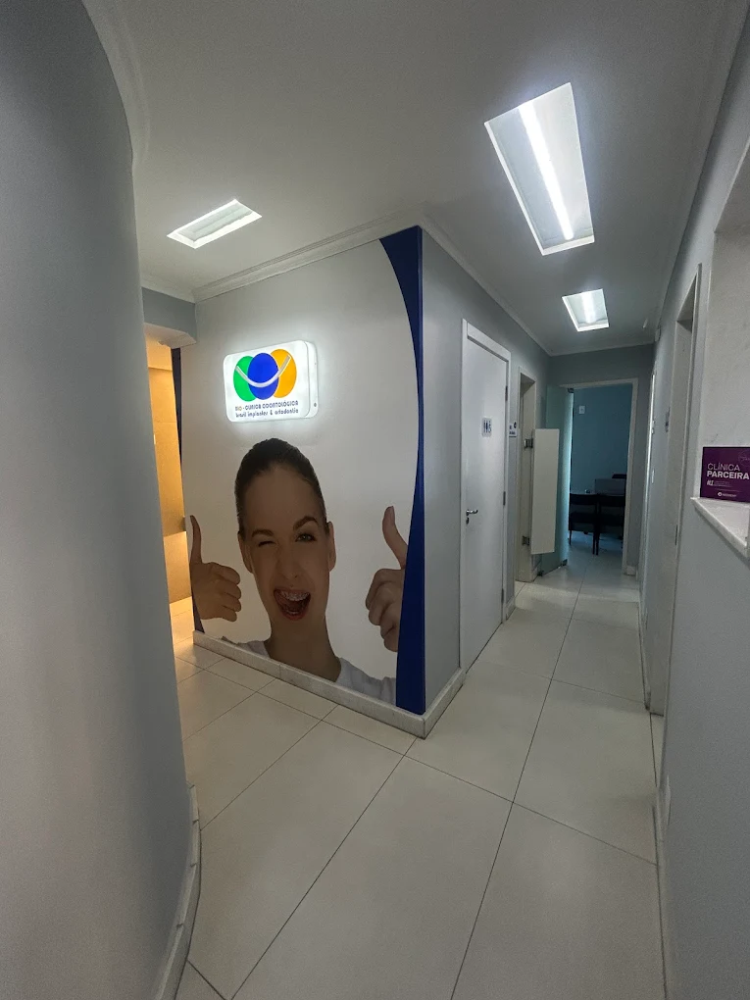
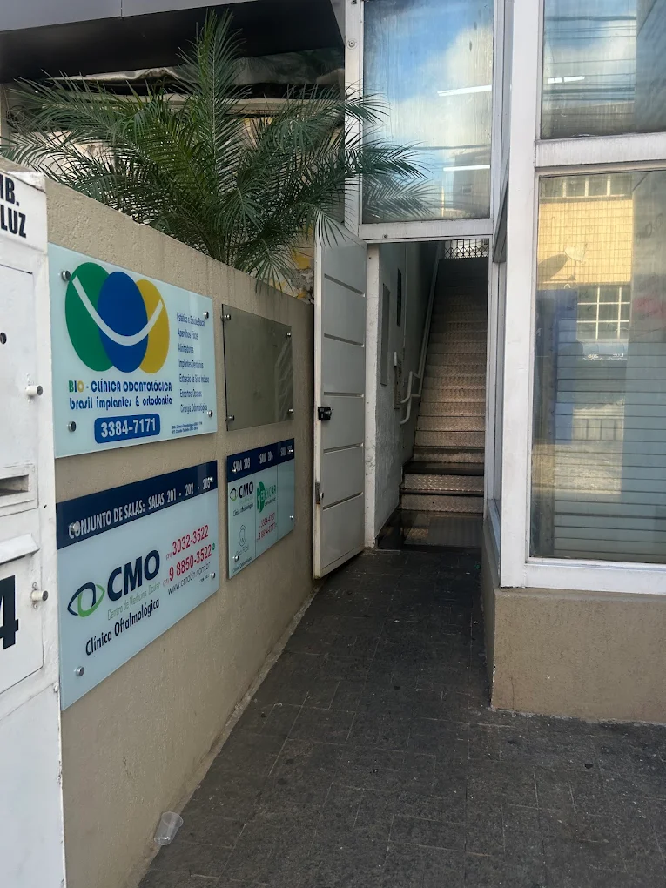
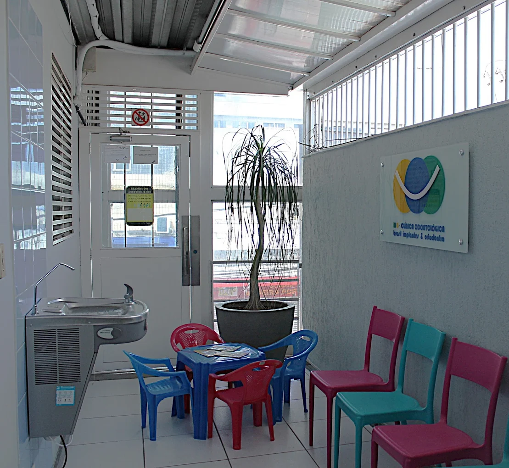

Clínica tradicional no Barreiro
A BIO Clínica Odontológica atua há mais de 30 anos na região do Barreiro, com presença consolidada e relação de confiança com a comunidade.
Tratamentos ortodônticos planejados de forma individual, com atendimento humanizado e estrutura completa para cuidar do seu sorriso em todas as etapas.
Que afetam o sorriso e a função mastigatória.
Dentes tortos ou desalinhados.
Espaços entre os dentes.
Mordida aberta, cruzada ou profunda.
Dificuldade na mastigação.
Incômodo com a estética do sorriso.
Necessidade de avaliação para uso de aparelho.
Por isso, a BIO realiza uma avaliação cuidadosa antes de indicar o melhor caminho para o tratamento ortodôntico.
Análise do alinhamento dentário, da mordida e das necessidades do seu sorriso.
Definição da melhor estratégia ortodôntica conforme o seu caso e os objetivos do tratamento.
Condução do tratamento com acompanhamento próximo e ajustes planejados ao longo das etapas.
Monitoramento contínuo para acompanhar a evolução do alinhamento e da mordida.
A BIO Clínica Odontológica atua há mais de 30 anos na região do Barreiro, com presença consolidada e relação de confiança com a comunidade.
O cuidado é próximo, claro e acolhedor, com orientações honestas e acompanhamento atento durante todo o tratamento ortodôntico.
A equipe da BIO conta com profissionais experientes e acompanhamento próximo para conduzir cada caso com responsabilidade e cuidado.
A clínica oferece estrutura completa para avaliação, planejamento e acompanhamento ortodôntico com mais conforto e organização.
Os próprios responsáveis participam dos atendimentos, reforçando segurança, continuidade e padrão de qualidade ao longo do tratamento.
Não é franquia e está em localização de fácil acesso na região do Barreiro, facilitando a rotina de acompanhamento ortodôntico.
Além de melhorar a aparência do sorriso, o tratamento ortodôntico também pode contribuir para uma mordida mais equilibrada, melhora da mastigação, facilidade na higienização e mais confiança no dia a dia.
A BIO Clínica Odontológica oferece atendimento em ortodontia com planejamento individual, foco no alinhamento do sorriso e acompanhamento próximo em cada etapa do tratamento.
Localizada no Barreiro, em Belo Horizonte, a clínica oferece atendimento odontológico com estrutura completa, experiência clínica e foco em tratamentos personalizados, com mais de 30 anos de atuação na região.
A BIO Clínica Odontológica valoriza um atendimento humanizado, sincero e próximo. Os próprios responsáveis pela clínica acompanham os atendimentos, o que fortalece o cuidado individualizado e a continuidade do tratamento.
Além disso, não é franquia nem faz parte de rede de clínicas, trabalha com corpo clínico capacitado, equipamentos modernos e atendimento voltado à evolução individual de cada sorriso.
Veja alguns espaços da clínica e a estrutura preparada para oferecer mais conforto, organização e qualidade no atendimento.







Conheça os profissionais que atuam na BIO Clínica Odontológica com foco em ortodontia, planejamento odontológico, tecnologia aplicada e atendimento acolhedor.
Idealizador da BIO Clínica Odontológica, atua no Barreiro há mais de 30 anos e é referência na região.
Possui especialização em Periodontia e mestrado em Clínica Odontológica com ênfase em Periodontia.
Atua como reabilitador clínico e também participa do acompanhamento de planejamentos odontológicos integrados.
Possui experiência na Prefeitura de Belo Horizonte e faz parte do corpo clínico do Hospital Orizonte.
Tem foco em planejamento odontológico e acompanhamento de casos com necessidade de alinhamento do sorriso e melhora funcional.
É o responsável pelo olhar tecnológico da clínica.
Tem formação em TI e domínio das tecnologias atuais aplicadas à odontologia.
Etapa inicial para analisar alinhamento dentário, mordida e necessidades do seu sorriso.
Definição do melhor caminho para o tratamento, de acordo com os objetivos e condições clínicas do paciente.
Monitoramento contínuo da evolução do tratamento ao longo das etapas planejadas.
A ortodontia pode contribuir para uma mordida mais equilibrada e mais conforto funcional.
O alinhamento dentário também pode trazer mais harmonia para o sorriso e mais confiança no dia a dia.
Cada caso precisa de avaliação individual antes da definição do tratamento ortodôntico.

Depoimentos de pacientes atendidos na clínica. As avaliações podem ser conferidas diretamente no Google.
A BIO Clínica Odontológica está localizada no Barreiro, em Belo Horizonte, com acesso facilitado para pacientes da região e arredores.
R. Desembargador Ribeiro da Luz, 274, sala 101 — Barreiro, Belo Horizonte/MG, 30640-040
Fale com a BIO Clínica Odontológica e agende uma avaliação ortodôntica no Barreiro.